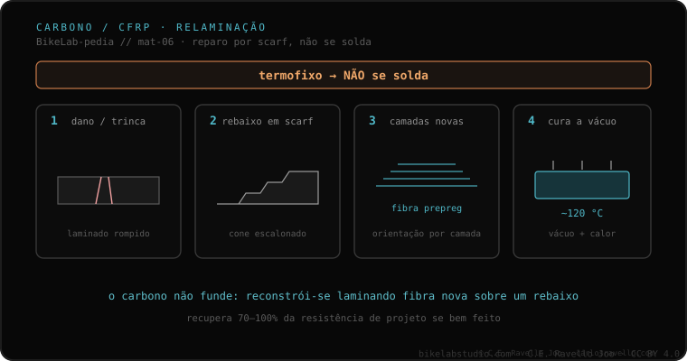

A fibra de carbono não se solda. É um material termofixo: não se funde para reunir como um metal. O que existe é um reparo diferente, por relaminado, feito por uma oficina especializada em compósitos (não por um soldador): rebaixa-se a zona danificada em forma de cone ou rampa (scarf), aplicam-se novas camadas de fibra e cura-se com calor e vácuo (~120 °C para prepreg). A literatura reporta recuperações de 70%–100% da resistência de projeto com um scarf bem feito.
Se o seu quadro for de carbono, a primeira coisa que muda é para quem você o leva: não é assunto de soldadores.
O metal se solda porque se funde: o calor o leva ao líquido e, ao esfriar, os tubos ficam unidos. O carbono não joga assim. É um material termofixo — uma matriz de resina curada que segura as fibras — e isso significa que não se funde para reunir. Não há temperatura que o "refunda" em uma união nova. Por isso dizer "soldar o carbono" é um erro de categoria: o que esse material admite é outra coisa.
Essa outra coisa é o reparo por relaminado, e é feito por uma oficina especializada em compósitos, não por um soldador. Rebaixa-se a zona danificada em forma de cone ou rampa — o scarf —, aplicam-se novas camadas de fibra (prepreg ou laminado úmido) e cura-se com calor e vácuo, da ordem de 120 °C para prepreg. A literatura de reparo de compósitos reporta recuperações de entre 70% e 100% da resistência de projeto com um scarf bem feito.

O carbono encaixa neste cluster por contraste: frente aos metais que se fundem ou se unem com aporte — a lógica de TIG, MIG e brazing —, aqui não há cordão nem fusão. Encaixa também com o modo como cada material acumula dano com o uso (a fadiga por material) e com as perguntas que convém fazer antes de deixar o quadro: a primeira, no carbono, é se quem vai tocá-lo é uma oficina de compósitos ou um soldador.
Se tiver dúvidas sobre um dano ou sobre quem deve tocá-lo, mande o caso. Diagnóstico real, sem vender nada. Fale conosco no WhatsApp
Não. A fibra de carbono é termofixa: não se funde para reunir como um metal. O que existe é um reparo diferente, por relaminado, feito por uma oficina especializada em compósitos, não por um soldador.
É o relaminado: rebaixa-se a zona danificada em forma de cone ou rampa (scarf), aplicam-se novas camadas de fibra (prepreg ou laminado úmido) e cura-se com calor e vácuo, da ordem de 120 °C para prepreg. A literatura reporta recuperações de 70% a 100% da resistência de projeto com um scarf bem feito.
É um sinal de alarme. Esse remendo fica rígido, pesado e perigoso. O reparo real é por scarf e é feito por uma oficina de compósitos, não por um soldador.
© 2026 BikeLab Studio. Conteúdo sob CC BY 4.0: você pode copiar, traduzir e publicar, inclusive com fins comerciais. A citação é obrigatória. Sem atribuição, a licença é revogada automaticamente (CC BY 4.0, §6.a) e o uso passa a ser violação de direitos autorais: solicitamos a retirada do conteúdo e sua desindexação. · Design e propriedade: Carlos Ravello Joo